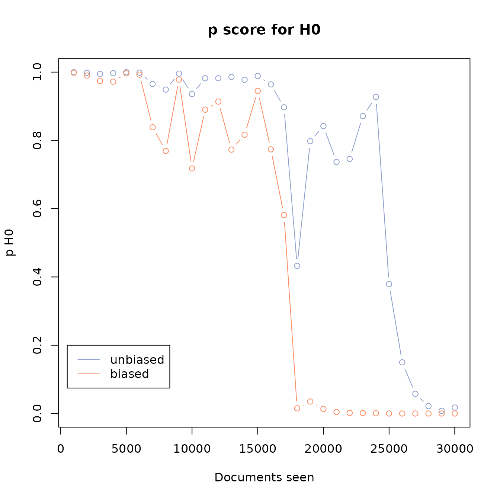

Stopping Criteria
stopping-criteria.RmdIntroduction
When we do machine learning-prioritised screening in a systematic review, we can only save work if we have a method for deciding when to stop. Several methods have been suggested, but those which rely on rules of thumb (like stopping after N consecutive irrelevant records) are not supported by either theory or empirical evaluations. A particular value of N may work well in one review, but do badly in another. The right value depends on the size of the dataset, the prevalence of relevant documents, the effectiveness of the machine learning algorithm, and a bit of luck. Moreover, using such a criterion does not allow us to say anything about our expected recall, nor our confidence in achieving it.
In Callaghan and Müller-Hansen (2020) we offered a theoretically well motivated stopping criteria, which we demonstrated was safe to use. It allows you to communicate your confidence in achieving any arbitrary recall target. This package aims to make this stopping criteria easy to use for R users.
Data
Lets initialise some test data. For demonstration purposes, we define
the number of documents, and the prevalence of relevant documents. Then
we simulate a prioritised screening-like process, where we sample
documents, where we are bias times more likely to select a
random relevant document than a random irrelevant document.
N <- 60000 # number of documents
prevalence <- 0.01 # prevalence of relevant documents
r <- N*0.01 # number of relevant documents
bias <- 10
docs <- rep(0,N)
docs[1:r] <- 1
weights = rep(1,N)
weights[1:r] <- bias
set.seed(2023)
docs <- sample(
docs, prob=weights, replace=F
)
df <- data.frame(relevant=docs)
plot(
cumsum(df$relevant),
type='l',
main="Simulation of ML-prioritised screening",
xlab="Documents seen",
ylab="Relevant documents seen"
)When is it safe to stop?
Let’s imagine we’ve seen just the first 20,000 documents. We can use our stopping criteria to calculate a p score for a null hypothesis that we have missed so many documents that we have not achieved our recall target.
If the p score is low, then we can reject that null hypothesis and stop safely. The lower the score, the more confident we can be about doing this. The p score is given by calculating the probability of observing the previous sequence of relevant and irrelevant documents, if there were enough remaining relevant documents to mean that our recall target had not been achieved.
For example, if we have seen 95 relevant documents, and our recall target is 95%, then there would have to be at least 6 relevant documents remaining for us to have missed our target. If we have just observed a sequence of 100 irrelevant document in a row, we ask how likely it would be to observe that by random sampling, if there were 6 relevant documents remaining.
We can calculate this using the buscarR package, by passing dataframe
with a column relevant that contains 1s and 0s for relevant
and irrelevant documents (and NAs for documents we have not seen yet). A
separate column seen tells us if this document has been
seen by a human yet or not. The dataframe should have as many rows as
there are unique documents in the dataset, should contain all that have
been seen by a human and all documents that have not yet been seen by a
human. The human-screened documents should be in the order in which they
were screened.
df$seen <- 0
df$seen[1:20000] <- 1
plot(
cumsum(df[df$seen==1,"relevant"]),
type='l',
main="Simulation of ML-prioritised screening",
xlab="Documents seen",
ylab="Relevant documents seen",
xlim=c(0,nrow(df))
)
p <- calculate_h0(df)
p
#> [1] 0.8418202Our p score of 0.8418202 indicates that we are not yet confident enough to stop screening. If we now “see” an additional 10,000 documents, this will change.
df$seen <- 0
df$seen[1:30000] <- 1
plot(
cumsum(df[df$seen==1,"relevant"]),
type='l',
main="Simulation of ML-prioritised screening",
xlab="Documents seen",
ylab="Relevant documents seen",
xlim=c(0,nrow(df))
)
p <- calculate_h0(df)
p
#> [1] 0.01742366We can now be very confident that we have not missed our recall target
Changing recall targets
We can calculate the same stopping criteria for a different
recall target, simply by using the
recall_target argument in calculate_h0.
p <- calculate_h0(df, recall_target=0.99)
p
#> [1] 0.5991158If we increase the recall target, we become less confident that we have not missed our target.
In many practical cases, we may not be very confident in one target,
but much more confident in a target that is only a little smaller. The
recall_frontier function calculates and plots the p score
for several different recall targets, helping to inform and
transparently communicate our decision about the safety of stopping
screening at any given point.
recall_df <- recall_frontier(df)
#> Warning in phyper(k_vec, k_hat_vec, red_ball_vec, n_vec): NaNs produced
#> Warning in phyper(k_vec, k_hat_vec, red_ball_vec, n_vec): NaNs producedThis also returns a dataframe with the p score at different recall targets
head(recall_df)
#> target p
#> 1 0.010 0
#> 2 0.015 0
#> 3 0.020 0
#> 4 0.025 0
#> 5 0.030 0
#> 6 0.035 0Retrospective stopping criteria
The package also includes a helper function to calculate the stopping
criteria at each point on a curve that has already been seen. By default
we calculate this after each batch of 1,000 documents. Change the
batch_size to alter this, though be warned that reducing it
will increase the number of calculations that needs to be made.
h0_df <- retrospective_h0(df)As well as making a plot, this will also return a dataframe with the p score after each batch
Biased urns
The stopping criteria, which is described in Callaghan and Müller-Hansen (2020), assumes that the documents we have screened previously were drawn at random from the remaining records. This assumption is conservative, as the machine-learning process should make it more likely that we pick a relevant document than an irrelevant document.
Being conservative, it is safe to use this stopping criteria (and evaluations show that it is wrong less than 5% of the time if the confidence level is set to 95%), but its conservative nature means that we will stop later than we strictly need to.
Biased urn theory offers us a more realistic set of assumptions, as
it describes the probability distribution given a situation where we are
more likely to select one type of item than another. We can implement
this in buscarR, by setting the bias parameter of our
functions. bias describes how much more likely it is to
select a relevant than a non-relevant document.
However, estimating this parameter is non-trivial, and work on how to do this safely is currently ongoing.
h0_df1 <- retrospective_h0(df, bias=1, plot=FALSE)
h0_df2 <- retrospective_h0(df, bias=5, plot=FALSE)
colors <- c("#8da0cb","#fc8d62")
matplot(
h0_df2$seen,
cbind(h0_df1$p,h0_df2$p),
main='p score for H0',
type='b',
ylab='p H0',
xlab='Documents seen',
col=colors,lty=c(1,1), pch=c(1,1)
)
legend(500,0.2, legend=c("unbiased","biased"),col=colors,lty=c(1,1))
References
If you use the stopping criteria in your work, please cite Callaghan and Müller-Hansen (2020)